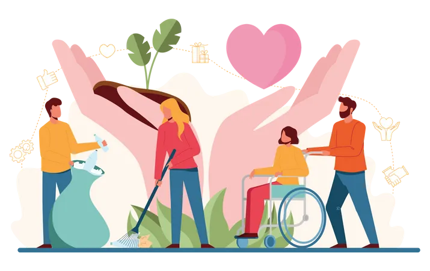

Welcome to Kripa's World
Time to book your first class tickets all around Kripa's world! By proceeding you also get a free package into Kripa's Photo site!
Time to book your first class tickets all around Kripa's world! By proceeding you also get a free package into Kripa's Photo site!

My favourite artists!
It has already been almost a decade since I liked BTS and honestly can never imagine leaving the fandom. I listen to their songs almost everyday and their work ethic has really inspired me to work harder in order to achieve my goals!
My favourite game franchize!
Ever since I've played Breath of the Wild, I've become super obessed with the Zelda franchize. The gameplay was so cool but the stories were even better! I loved it so much that I also brought the sequel (Tears of the Kingdom)!

What I want to do in the future :3
Ever since primary I've always loved STEM subjects and after trying out tech related subjects I realised I really enjoy the coding experience, especially making new things! It's so satisfying!

One of my fav anime!
Anime has always been on my mind since I was a child, but Demon Slayer places a special spot in my mind! I really like the story and all the characters. My favourite is Tanjiro!


In terms of jobs, I am a senior tutor who mainly teaches HSC subjects. It has already been around a year since I've started teaching and I've really enjoyed teaching and getting to know so many students!
Outside of jobs, I also do society work at UNSW as a director! My main responsibilities are to write our blogs, carry out initiatives as well as delegate tasks to subcommittees!
I really enjoy doing photography in my free time as well as singing from time to time. Speaking of photography, as part of your package you also recieve an exclusive to my photographs. Check it out in the link below!
View my photographs!